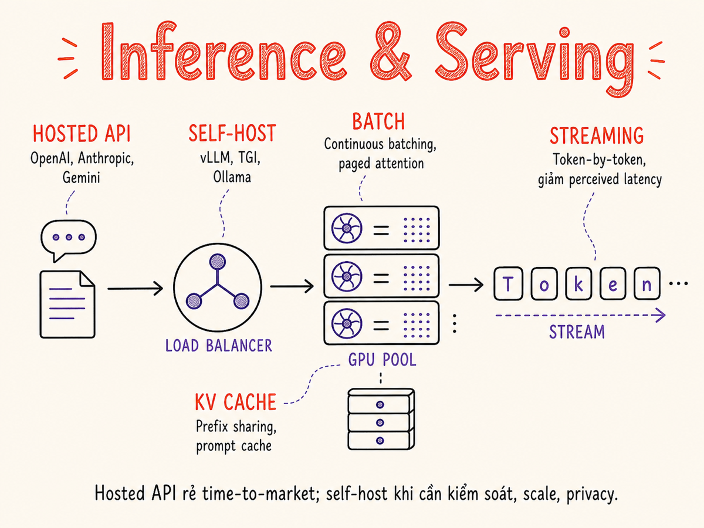

Inference & Serving
Từ hosted API đến tự host, từ GPU memory math đến continuous batching — tất cả những gì cần biết để deploy LLM hiệu quả và tiết kiệm chi phí trong production.

10.1 Hosted API vs Self-hosted — quyết định quan trọng nhất
Câu hỏi đầu tiên khi deploy LLM không phải là chọn framework nào, mà là: bạn có tự chạy model không? Quyết định này ảnh hưởng đến chi phí, latency, privacy, và độ phức tạp vận hành lên tới vài bậc độ lớn.
| Tiêu chí | Hosted API (OpenAI, Anthropic, Google…) | Self-hosted (vLLM, TGI, Ollama…) |
|---|---|---|
| Chi phí ban đầu | Không có — pay per token | Cao (GPU, cấu hình, kỹ sư) |
| Chi phí ở scale | Tuyến tính tăng theo token | Gần cố định sau khi có đủ GPU |
| Latency | Phụ thuộc network + queue của provider | Controllable, có thể rất thấp với hardware tốt |
| Privacy & data residency | Dữ liệu ra ngoài hạ tầng bạn | Hoàn toàn on-premise, không rời mạng |
| Model control | Dùng model provider cung cấp | Chọn bất kỳ open-source, fine-tune thoải mái |
| Uptime / reliability | Provider lo, SLA thường ≥99.9% | Bạn lo — cần redundancy, on-call |
| Maintenance | Zero | Cập nhật engine, driver CUDA, bảo mật |
| Thời gian đến production | Vài giờ | Vài ngày đến vài tuần |
Với workload nhỏ (<10M token/ngày), hosted API thường rẻ hơn tổng chi phí TCO self-hosted. Trên 100M token/ngày với model open-source tương đương, self-hosted bắt đầu có lợi thế rõ rệt. Nhưng đừng quên chi phí kỹ sư — một H100 cần người chạy nó.
Khi nào nên tự host?
- Data sensitivity: dữ liệu y tế, tài chính, bí mật thương mại không thể rời mạng nội bộ
- Scale lớn + model ổn định: bạn đã fine-tune một model riêng và chạy hàng tỷ token/tháng
- Latency P99 cực thấp: ứng dụng real-time cần <100ms TTFT, không thể chấp nhận queue của hosted provider
- Customization sâu: cần thay đổi sampling, custom attention mask, hoặc serve nhiều LoRA adapter cùng lúc
- Offline / air-gap: hệ thống không có internet (quân sự, phòng lab bảo mật)
10.2 Self-host stacks: vLLM, SGLang, TGI, Ollama, llama.cpp, MLX, TensorRT-LLM
Khi quyết định tự host, bạn phải chọn inference engine. Mỗi engine có trade-off khác nhau về performance, ease of use, và hardware support. Từ cuối 2025, SGLang nổi lên như đối thủ ngang tầm vLLM; Hugging Face TGI chuyển sang chế độ maintenance-only (tháng 12/2025).
| Engine | Tốt nhất cho | Hardware | Throughput | Ease of use | License |
|---|---|---|---|---|---|
| vLLM | Production serving, high throughput, OpenAI-compatible API; hỗ trợ rộng nhất (TPU, Trainium, Gaudi) | NVIDIA, AMD, TPU, Gaudi | ★★★★★ | ★★★★ | Apache 2.0 |
| SGLang | Throughput cao hơn vLLM ~29% trên H100; multi-turn conversation; DeepSeek MoE models | NVIDIA GPU (CUDA) | ★★★★★ | ★★★★ | Apache 2.0 |
| TGI (Hugging Face) | Legacy HuggingFace deployments — maintenance mode từ 12/2025 | NVIDIA GPU, một số AMD | ★★★★ | ★★★★ | Apache 2.0 |
| Ollama | Local dev, demo, Mac/Linux desktop | CPU, Apple Silicon, NVIDIA | ★★★ | ★★★★★ | MIT |
| llama.cpp | CPU inference, low-end hardware, edge deploy | CPU, Apple Silicon, NVIDIA | ★★★ | ★★★ | MIT |
| MLX (Apple) | Apple Silicon Mac, local dev & fine-tune | Apple Silicon only | ★★★★ | ★★★★ | MIT |
| TensorRT-LLM | Maximum throughput trên NVIDIA (H100/B200); FP8/NVFP4/INT4-AWQ native | NVIDIA GPU only | ★★★★★ | ★★ | Apache 2.0 |
vLLM là lựa chọn hàng đầu cho production serving. Điểm mạnh cốt lõi là PagedAttention — quản lý KV cache dạng paged memory như OS virtual memory, giảm fragmentation và cho phép continuous batching hiệu quả. Hỗ trợ OpenAI-compatible API, LoRA, speculative decoding (EAGLE-3), tensor parallelism đa GPU, và từ vLLM V1: chunked prefill bật mặc định và disaggregated prefill/decode.
# Khởi động vLLM server (V1 engine mặc định từ vLLM 0.8+)
python -m vllm.entrypoints.openai.api_server \
--model meta-llama/Meta-Llama-3.1-8B-Instruct \
--tensor-parallel-size 2 \
--max-model-len 8192 \
--gpu-memory-utilization 0.90 \
--enable-prefix-caching # prefix caching — mặc định trong V1SGLang nổi lên như đối thủ ngang tầm vLLM từ 2025. Điểm mạnh là RadixAttention — quản lý KV cache dạng radix tree, tự động phát hiện và tái sử dụng prefix chung giữa các request mà không cần cấu hình thủ công. Benchmark cho thấy throughput cao hơn vLLM ~29% trên H100 với model 7-8B, đặc biệt mạnh với multi-turn conversation và DeepSeek MoE (3.1x nhanh hơn trên DeepSeek V3).
# Khởi động SGLang server
python -m sglang.launch_server \
--model-path meta-llama/Meta-Llama-3.1-8B-Instruct \
--port 30000 \
--tp-size 2
Ollama ưu tiên developer experience: một lệnh ollama run llama3.2
là xong. Dùng llama.cpp backend, tự động detect hardware (Metal/CUDA/CPU). Không phù hợp
production high-throughput nhưng tuyệt vời cho local testing, demo nhanh, và CI.
# Local dev với Ollama
ollama pull llama3.2
ollama serve # OpenAI-compatible tại :11434
# Tích hợp OpenAI SDK
client = OpenAI(base_url="http://localhost:11434/v1")
response = client.chat.completions.create(
model="llama3.2", messages=[...])TensorRT-LLM của NVIDIA biên dịch model thành TensorRT engine, đạt throughput cao nhất trên NVIDIA hardware. Độ phức tạp cao: cần compile engine riêng cho từng model/GPU/ batch size combination. Phù hợp khi bạn đã ổn định model và cần squeeze performance cuối cùng.
# Build TRT-LLM engine (offline step)
trtllm-build \
--checkpoint_dir ./llama-3.1-8b-weights \
--output_dir ./llama-engine \
--max_batch_size 64 \
--max_seq_len 4096 \
--tp_size 110.3 Hardware — GPU memory math
Câu hỏi thực tiễn nhất khi self-host: cần bao nhiêu GPU VRAM? Có 3 thành phần chiếm VRAM: model weights, KV cache, và activations trong quá trình inference.
Công thức tính VRAM thực tế
# Ước tính VRAM cần thiết (GB)
# 1. Model weights
model_vram = num_params_B * bytes_per_param
# FP32=4, BF16/FP16=2, INT8=1, INT4=0.5 bytes
# Llama 3.1 8B, FP16: 8 * 2 = 16 GB
# 2. KV Cache per token
kv_per_token = 2 * num_layers * d_head * num_kv_heads * bytes_per_param
# Llama 3.1 8B: 2 * 32 * 128 * 8 * 2 = 131072 bytes ≈ 0.128 MB/token
# 3. Tổng KV cache cho batch
kv_total_gb = kv_per_token * max_seq_len * batch_size / 1e9
# batch=8, seq=4096: 0.128 MB * 4096 * 8 ≈ 4.2 GB
# 4. Tổng (với 20% overhead)
total_vram = (model_vram + kv_total_gb) * 1.2| GPU | VRAM | Băng thông bộ nhớ | Model fits | Use case | Giá approx |
|---|---|---|---|---|---|
| B200 SXM | 192 GB HBM3e | 8.0 TB/s | 405B+ FP8/NVFP4 | Frontier production; 1000+ TPS/user trên Llama 4 Maverick | ~$70k/unit |
| H100 SXM | 80 GB HBM3 | 3.35 TB/s | 70B FP16, 405B INT4 | Production standard hiện tại; FP8 native | ~$30k/unit |
| AMD MI355X | 288 GB HBM3E | 8.0 TB/s | 405B+ FP8 | Cạnh tranh B200; 1.4x throughput hơn B200 trên DeepSeek-R1 | ~$40k/unit |
| A100 SXM | 80 GB HBM2e | 2.0 TB/s | 70B FP16 | Production, một bậc dưới H100 | ~$15k/unit |
| L40S | 48 GB GDDR6 | 864 GB/s | 34B FP16, 70B INT4 | Mid-tier production, cost-effective | ~$8k/unit |
| RTX 4090 | 24 GB GDDR6X | 1008 GB/s | 13B FP16, 34B INT4 | Dev/test, nhỏ, 1 GPU | ~$1.5k |
| Apple M3 Max | 128 GB shared | 400 GB/s | 70B INT4 | Local Mac dev với MLX | Laptop |
Nếu model không vừa 1 GPU, dùng tensor parallelism (TP): chia layers across GPUs.
vLLM hỗ trợ --tensor-parallel-size N. TP=2 cần 2 GPU cùng node với NVLink —
latency tăng thêm ~10-20% do all-reduce communication.
Tránh nhầm với pipeline parallelism (PP): chia theo stages, latency cao hơn nhiều.
10.4 Quantization cho inference — recap từ §6
Quantization giảm VRAM và tăng throughput bằng cách dùng ít bits hơn để biểu diễn weights. Trong ngữ cảnh serving, 3 format phổ biến nhất:
INT8 (W8A16 / W8A8)
Giảm model size 50% so với FP16. Quality loss thường <1%. W8A16 (weights INT8, activations FP16) phổ biến nhất, ổn với mọi model. Dùng bitsandbytes hoặc vLLM built-in.
INT4 (GPTQ / AWQ / GGUF Q4)
Giảm model size 75% so với FP16. Quality drop ~2-5% tùy model và dataset. AWQ tốt hơn GPTQ một chút vì scale activation-aware. GGUF Q4_K_M của llama.cpp là sweet spot.
FP8 (E4M3)
NVIDIA H100/B200 native FP8. Gần như không mất quality so với BF16, throughput tăng ~1.5-2x. vLLM, SGLang, và TRT-LLM đều hỗ trợ. Đây là tiêu chuẩn cho H100 production 2025+.
NVFP4 / MXFP4 (Blackwell)
Format 4-bit mới của NVIDIA dành cho GPU Blackwell (B200/B300). TensorRT-LLM hỗ trợ NVFP4/MXFP4 native. Throughput tăng ~2x so với FP8 với quality loss nhỏ hơn INT4 truyền thống.
Chọn nhanh
- B200/B300 → NVFP4 (TRT-LLM) hoặc FP8
- H100 production → FP8
- A100/L40S production → INT8 (BF16 nếu đủ VRAM)
- GPU vừa → AWQ INT4
- CPU / llama.cpp → GGUF Q4_K_M
10.5 Tối ưu latency
Latency của LLM inference có 2 metric quan trọng: TTFT (Time To First Token — người dùng chờ bao lâu trước khi thấy chữ đầu tiên) và TPOT (Time Per Output Token — tốc độ stream token sau đó). Người dùng thường nhạy cảm với TTFT hơn TPOT nếu TPOT <100ms/token.
Streaming
Streaming (Server-Sent Events) là cách đơn giản nhất để cải thiện perceived latency. Dù TTFT không thay đổi, người dùng thấy output xuất hiện ngay thay vì chờ đến khi hoàn chỉnh. Tất cả major API và serving framework đều hỗ trợ streaming.
Speculative Decoding
Ý tưởng: dùng một draft model nhỏ để sinh nhanh nhiều token, sau đó dùng target model xác nhận batch token đó song song (1 forward pass). Nếu draft đúng, throughput tăng 2-3x; nếu sai, discard và tiếp tục như bình thường. Quality không thay đổi vì target model quyết định.
EAGLE-3 (2025) là phương pháp speculative decoding tiên tiến nhất hiện tại: thay vì dùng một draft model riêng biệt, EAGLE-3 dùng tri-layer feature fusion (kết hợp layer đầu, giữa, và cuối của target model) để dự đoán token tiếp theo. Benchmark đạt 4.1–6.5x speedup ở temperature=0. NVIDIA dùng EAGLE-3 để đạt 1000+ TPS/user trên DGX B200 với Llama 4 Maverick (4x so với baseline Blackwell).
# vLLM speculative decoding với draft model
python -m vllm.entrypoints.openai.api_server \
--model meta-llama/Meta-Llama-3.1-70B-Instruct \
--speculative-model meta-llama/Meta-Llama-3.2-1B-Instruct \
--num-speculative-tokens 5
# vLLM với EAGLE-3 (khi có checkpoint EAGLE-3)
python -m vllm.entrypoints.openai.api_server \
--model meta-llama/Meta-Llama-3.1-70B-Instruct \
--speculative-model lmsys/vicuna-68m-eagle3 \
--speculative-draft-tensor-parallel-size 1Prompt Caching
Khi prefix của prompt lặp lại (system prompt, few-shot examples, long document), provider/engine có thể cache KV cache của phần đó và skip re-computation. Anthropic Claude và OpenAI đều hỗ trợ prompt caching với discount tới 90% cost và giảm TTFT đáng kể.
Đặt system prompt và context cố định lên đầu, user message xuống cuối.
vLLM tự động cache prefix nếu bật --enable-prefix-caching.
Với system prompt 2000 token lặp lại 100 request/phút: tiết kiệm 200k token/phút
computation — có thể gấp đôi capacity mà không thêm GPU.
10.6 Tối ưu throughput — Continuous Batching & Paged Attention
Throughput là số token generate được mỗi giây trên toàn server. Để tối ưu throughput, cần hiểu sự khác biệt giữa static batching và continuous batching.
Paged Attention
vLLM dùng PagedAttention: KV cache được chia thành các blocks kích thước cố định (giống page trong OS), phân bổ và thu hồi động. Lợi ích:
- Không cần pre-allocate VRAM cho max sequence length mỗi request
- Cho phép share KV cache giữa multiple requests có cùng prefix
- Giảm fragmentation, tăng số concurrent request 2-4x
FlashAttention-3
FlashAttention-3 tối ưu attention kernel cho H100 bằng cách tận dụng tính bất đồng bộ (asynchrony) và low-precision của Hopper architecture. So với FlashAttention-2, FA3 mang lại ~1.5–2x speedup và giảm 50% memory usage, cho phép context dài hơn trên cùng phần cứng. Hầu hết serving framework (vLLM, SGLang, TRT-LLM) đã tích hợp FA3 mặc định trên H100.
Prefill/Decode Disaggregation
Một trong những cải tiến kiến trúc lớn nhất 2024-2025: tách biệt hẳn cụm GPU làm prefill và cụm làm decode thay vì chạy chung trên một pool. Lý do: prefill là compute-bound (cần FLOPS cao), decode là memory-bandwidth-bound (cần băng thông bộ nhớ cao) — hai đặc điểm tối ưu cho hardware khác nhau.
- DistServe (OSDI 2024): nghiên cứu đặt nền móng, chứng minh 7.4x more requests hoặc 12.6x tighter SLO so với colocated.
- Mooncake (Moonshot AI, Best Paper FAST 2025): triển khai production cho Kimi — 128 H200 GPU, đạt 224k tokens/sec prefill + 288k tokens/sec decode; giảm KV transfer overhead 35-50% với conductor tối ưu locality.
- vLLM V1 hỗ trợ disaggregated prefill/decode natively; NVIDIA Dynamo, llm-d, SGLang đều chạy disaggregation ở production.
P/D disaggregation phức tạp hơn nhiều về vận hành (cần KV transfer qua network, điều phối 2 pool GPU). Chỉ đáng đầu tư khi bạn có >50 GPU và SLO TTFT nghiêm ngặt (<500ms) trong khi vẫn cần throughput decode cao. Với workload nhỏ hơn, chunked prefill + continuous batching là đủ.
10.7 Quản lý chi phí
Với hosted API, chi phí là trực tiếp và dễ đo. Với self-hosted, chi phí là GPU amortization + electricity + engineering. Dù hình thức nào, có 4 chiến lược giảm chi phí hiệu quả nhất:
Token Budgeting
Kiểm soát chặt max_tokens và context window. Một request với context 10k token tốn gấp 10x so với 1k token. Dùng chunking, summarization, hay retrieval để giữ context ngắn.
Semantic Caching
Cache response dựa trên semantic similarity của câu hỏi thay vì exact string match. Dùng vector search: nếu câu hỏi mới có embedding cosine similarity >0.95 với một câu hỏi đã cache, trả về response cũ. Với FAQ, customer support, hoặc lookup queries: cache hit rate 30-60% là bình thường.
import numpy as np
class SemanticCache:
def __init__(self, threshold=0.95):
self.threshold = threshold
self.store = [] # list of (embedding, response)
def get(self, query_embedding):
for emb, resp in self.store:
sim = np.dot(query_embedding, emb)
if sim >= self.threshold:
return resp # cache hit
return None # cache missVới OpenAI và Anthropic, output token thường đắt gấp 3-5x input token. Một completion dài 2000 token đắt hơn một prompt 2000 token rất nhiều. Khi ước tính budget, đừng bỏ qua distribution giữa input và output.
Anthropic prompt caching yêu cầu prefix phải giữ nguyên chính xác giữa các request. Nếu bạn inject timestamp hay user ID vào system prompt, prefix thay đổi mỗi request → không được cache. Đặt dynamic content xuống cuối prompt, sau phần static.
10.8 Multi-region deployment, auto-scaling, warm pools
Với hosted API, provider lo multi-region. Với self-hosted, bạn phải thiết kế:
Auto-scaling chiến lược
- Scale on queue depth: khi pending requests > threshold → add replicas. Tốt hơn scale on CPU/GPU vì GPU có thể idle khi đang chờ KV cache.
- Scale on TTFT P95: nếu P95 TTFT > SLO → scale out. Phản ánh trực tiếp user experience.
- Minimum replicas ≥ 2: luôn có ít nhất 2 instance để không downtime khi rolling update.
Warm pools
LLM server cold start rất chậm: load model vào GPU mất 30-120 giây tùy model size. Dùng warm pool: luôn giữ N instance sẵn sàng (không serving nhưng model đã load). Khi traffic tăng, promote từ warm pool ra serving pool trong vài giây thay vì vài phút.
Multi-region với latency routing
Deploy ít nhất 2 region (ví dụ us-east-1 và eu-west-1). Dùng DNS latency routing (Route53/Cloudflare) để user kết nối đến region gần nhất. Đặt health check để tự động failover nếu một region down. Với self-hosted model, đảm bảo model weights được replicate trước deployment.
10.9 Các pattern phổ biến trong production
Cache-First Pattern
async def chat_with_cache(user_message: str):
# 1. Check exact cache (Redis)
cached = await redis.get(hash(user_message))
if cached: return cached
# 2. Check semantic cache
embedding = await embed(user_message)
semantic = semantic_cache.get(embedding)
if semantic: return semantic
# 3. Call LLM
response = await llm.chat(user_message)
# 4. Store in both caches
await redis.setex(hash(user_message), 3600, response)
semantic_cache.put(embedding, response)
return responseFallback Chain
async def llm_with_fallback(prompt: str):
providers = [
("anthropic", claude_client),
("openai", openai_client),
("local", ollama_client),
]
for name, client in providers:
try:
return await client.complete(prompt, timeout=10)
except (RateLimitError, ServiceUnavailableError) as e:
log.warning(f"Provider {name} failed: {e}, trying next")
raise AllProvidersFailedError()Retry với Exponential Backoff
import asyncio, random
async def call_with_backoff(fn, max_retries=3, base_delay=1.0):
for attempt in range(max_retries):
try:
return await fn()
except RateLimitError:
if attempt == max_retries - 1:
raise
delay = base_delay * (2 ** attempt) + random.uniform(0, 1)
await asyncio.sleep(delay)
# Jitter prevents thundering herdTóm tắt
- Hosted vs self-hosted: hosted khi <10M token/ngày hoặc cần tốc độ ra thị trường; self-hosted khi privacy, scale lớn, hoặc cần deep customization.
- Engine choice (2025+): vLLM cho production đa hardware (NVIDIA, AMD, TPU); SGLang khi cần throughput cao nhất trên NVIDIA hoặc multi-turn/MoE; TGI chuyển maintenance mode; TRT-LLM khi cần maximum performance trên NVIDIA với FP8/NVFP4.
- VRAM math: model weights + KV cache + activations. KV cache tăng tuyến tính theo batch và context length — đây là bottleneck chính.
- Quantization: FP8 là tiêu chuẩn H100 2025; NVFP4/MXFP4 cho Blackwell (B200/B300); AWQ INT4 cho GPU nhỏ hơn.
- Latency: streaming cho perceived UX; EAGLE-3 speculative decoding 4–6x TPOT; prefix caching giảm TTFT và cost; FlashAttention-3 2x speedup trên H100.
- Throughput: continuous batching + paged attention là nền tảng; P/D disaggregation (Mooncake/DistServe) cho scale >50 GPU với SLO nghiêm ngặt.
- Cost: model cascade + semantic cache + prompt caching có thể giảm 60-80% chi phí với quality không đổi.
- Production patterns: cache-first, fallback chain, exponential backoff với jitter — 3 pattern bắt buộc trong mọi LLM service.